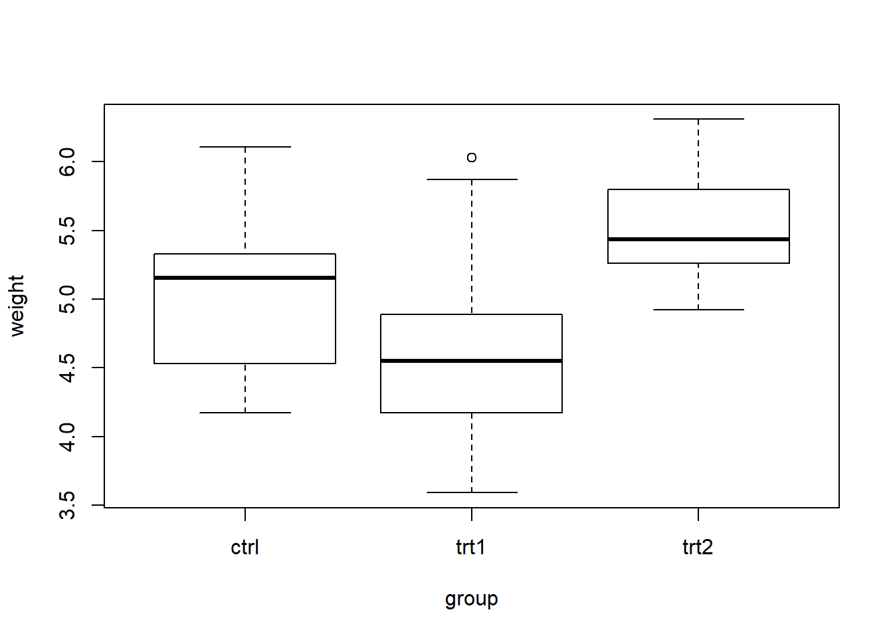
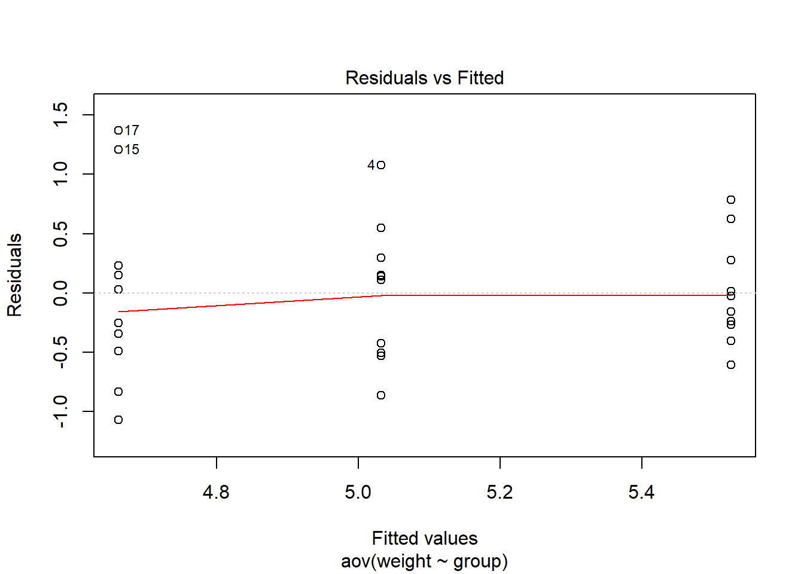
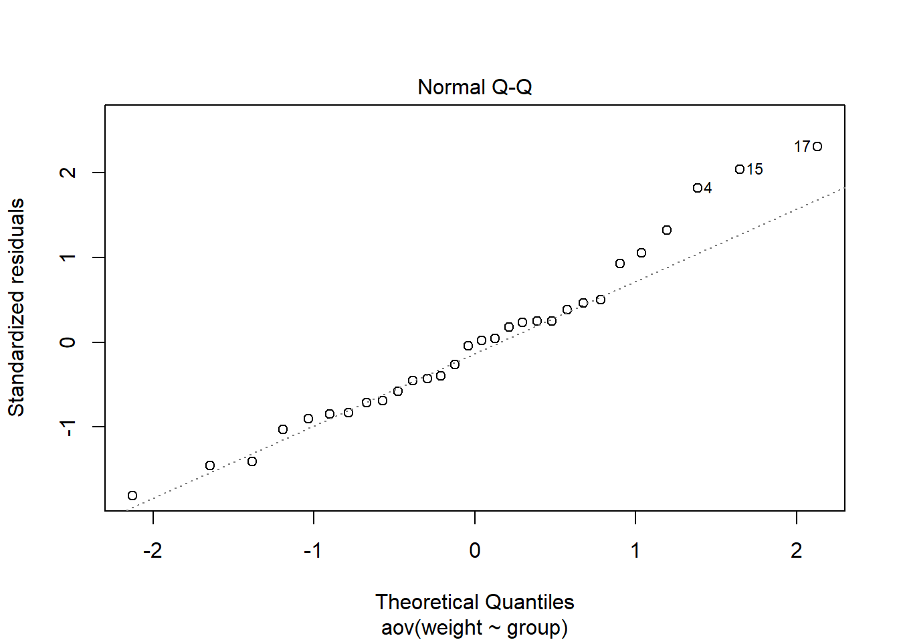
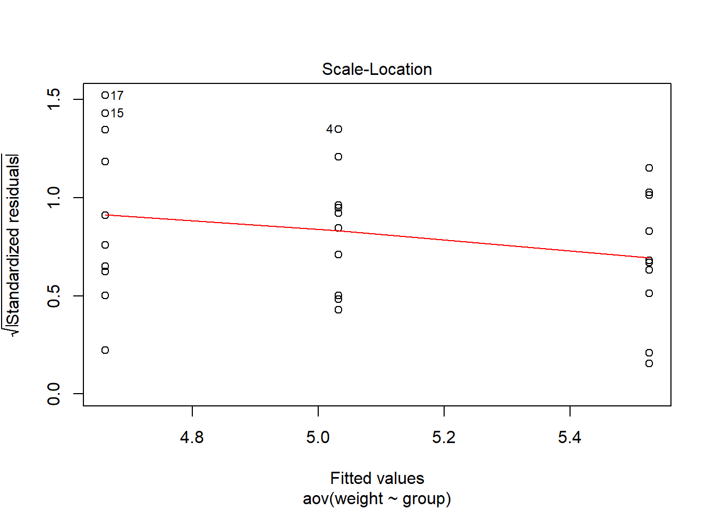
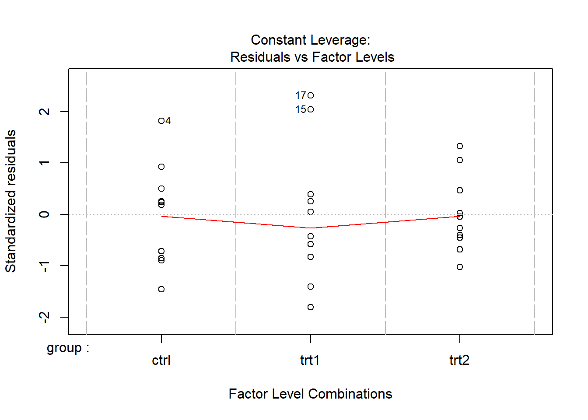
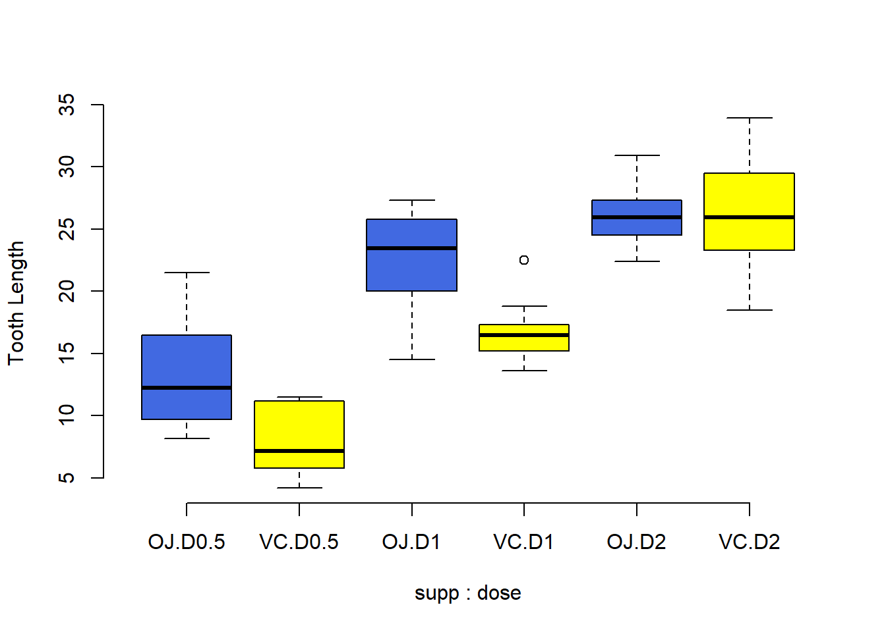

Funkcja aov jest używana do jednoczynnikowej i wieloczynnikowej analizy wariancji.
Wykonujemy testy istotności następująco:
Załadujmy sobie ramkę danych:
dane<-PlantGrowth
head(dane)## weight group
## 1 4.17 ctrl
## 2 5.58 ctrl
## 3 5.18 ctrl
## 4 6.11 ctrl
## 5 4.50 ctrl
## 6 4.61 ctrllevels(dane$group)## [1] "ctrl" "trt1" "trt2"Policzmy dla każdej grupy średnią i odchylenie standardowe:
library(dplyr)##
## Attaching package: 'dplyr'## The following objects are masked from 'package:stats':
##
## filter, lag## The following objects are masked from 'package:base':
##
## intersect, setdiff, setequal, uniongroup_by(dane, group) %>%
summarise(
count = n(),
mean = mean(weight, na.rm = TRUE),
sd = sd(weight, na.rm = TRUE)
)## # A tibble: 3 x 4
## group count mean sd
## <fct> <int> <dbl> <dbl>
## 1 ctrl 10 5.03 0.583
## 2 trt1 10 4.66 0.794
## 3 trt2 10 5.53 0.443lub ręcznie:
ctrl<-dane[dane$group=="ctrl",]
mean(ctrl$weight)## [1] 5.032sd(ctrl$weight) ## [1] 0.5830914trt1<-dane[dane$group=="trt1",]
mean(trt1$weight)## [1] 4.661sd(trt1$weight) ## [1] 0.7936757trt2<-dane[dane$group=="trt2",]
mean(trt2$weight)## [1] 5.526sd(trt2$weight) ## [1] 0.4425733Spójrzmy na wykres:
boxplot(weight~group,data=dane)
Przeprowadźmy analizę wariancji w R za pomocą aov:
model <- aov(weight ~ group, data = dane)
summary(model)## Df Sum Sq Mean Sq F value Pr(>F)
## group 2 3.766 1.8832 4.846 0.0159 *
## Residuals 27 10.492 0.3886
## ---
## Signif. codes: 0 '***' 0.001 '**' 0.01 '*' 0.05 '.' 0.1 ' ' 1Obliczmy to ręcznie:
y<-dane$weight
ym<-mean(y)
yh<-model$fitted.values
ssm<-sum((yh-ym)^2)
ssm## [1] 3.76634ssr<-sum((y-yh)^2)
ssr## [1] 10.49209Liczba stopni swobody:
msm<-ssm/2
msm## [1] 1.88317mse<-ssr/27
mse## [1] 0.3885959Statystyka \(F= \frac{MSM}{MSE}\).
f<-msm/mse
f## [1] 4.846088Obliczamy kwantyl
qf(0.95, 2,27)## [1] 3.354131Jeśli wartość statystyki jest większa kwantylowi, odrzucamy hipotezę zerową. W przeciwnym wypadku przyjmujemy hipotezę zerową.
p<-1-pf(f, 2,27)
p## [1] 0.01590996W naszym wypadku stwierdzamy, że skoro \(p\) jest mniejsze niż \(0,05\), to istenieją wystarczając różnice między średnimi w grupach.
Na koniec wykresy:
plot(model)
W naszym przypadku dotychczas dowiedzieliśmy się, że są różnice pomiędzy średnimi, ale nie mam informacji w której grupie występuje różnica.
Wykorzystamy: Tukey Honest Significant Differences.
TukeyHSD(model)## Tukey multiple comparisons of means
## 95% family-wise confidence level
##
## Fit: aov(formula = weight ~ group, data = dane)
##
## $group
## diff lwr upr p adj
## trt1-ctrl -0.371 -1.0622161 0.3202161 0.3908711
## trt2-ctrl 0.494 -0.1972161 1.1852161 0.1979960
## trt2-trt1 0.865 0.1737839 1.5562161 0.0120064Pierwsza kolumna to różnice pomiędzy odpowiednimi średnimi. Muszą być większe od \(HSD\).
q<-qtukey(0.95,3,27)
hsd <- q * sqrt(mse / 10)
hsd## [1] 0.6912161Aby różnice było można uznać za wiarygodne, musi zachodzić \(\left|Y_1 - Y_2\right| \geq HSD\). Wyjaśnienie q - link.
Przedziały ufności są wyznaczonę metodą Tukeya-Kramera.
\[\overline{x}_i - \overline{x}_j \pm q \sqrt{\left(\frac{MSE}{2}\right) \left(\frac{1}{n_i} + \frac{1}{n_j}\right)}\] gdzie \(q\) - odpowiedni kwantyl, \(n_i\) - liczebność odpowiedniej grupy.
mean(trt1$weight)-mean(ctrl$weight) + q * sqrt(mse / 2 * (2 / 10))## [1] 0.3202161mean(trt1$weight)-mean(ctrl$weight) - q * sqrt(mse / 2 * (2 / 10))## [1] -1.062216mean(trt2$weight)-mean(ctrl$weight) + q * sqrt(mse / 2 * (2 / 10))## [1] 1.185216mean(trt2$weight)-mean(ctrl$weight) - q * sqrt(mse / 2 * (2 / 10))## [1] -0.1972161mean(trt2$weight)-mean(trt1$weight) + q * sqrt(mse / 2 * (2 / 10))## [1] 1.556216mean(trt2$weight)-mean(trt1$weight) - q * sqrt(mse / 2 * (2 / 10))## [1] 0.1737839By wyjaśnić skorygowane \(p\), wykonamy obliczenia:
center.trt1.ctrl <- (mean(trt1$weight)-mean(ctrl$weight))/sqrt(mse/10)
ptukey(abs(center.trt1.ctrl), 3, 27, lower.tail=FALSE)## [1] 0.3908711center.trt2.ctrl <- (mean(trt2$weight)-mean(ctrl$weight))/sqrt(mse/10)
ptukey(abs(center.trt2.ctrl), 3, 27, lower.tail=FALSE)## [1] 0.197996center.trt2.trt1 <- (mean(trt2$weight)-mean(trt1$weight))/sqrt(mse/10)
ptukey(abs(center.trt2.trt1), 3, 27, lower.tail=FALSE)## [1] 0.01200642Ramka ToothGrowth opisuje długość odontoblaststów (komórek produkujących zębinę) u świnek morskich. Zwierzęta otrzymywały witaminę C w dwóch postaciach (OJ - sok pomarańczowy, VC - kwas askorbinowy, zmienna supp). Zmienna dose zawiera informację o dawce.
Kod do samodzielnego przeanalizowania:
dane2 <- ToothGrowth
dane2$dose <- factor(dane2$dose,
levels = c(0.5, 1, 2),
labels = c("D0.5", "D1", "D2"))
boxplot(len ~ supp * dose, data=dane2, frame = FALSE,
col = c("royalblue", "yellow"), ylab="Tooth Length")
model2<- aov(len ~ supp + dose, data = dane2)
summary(model2)## Df Sum Sq Mean Sq F value Pr(>F)
## supp 1 205.4 205.4 14.02 0.000429 ***
## dose 2 2426.4 1213.2 82.81 < 2e-16 ***
## Residuals 56 820.4 14.7
## ---
## Signif. codes: 0 '***' 0.001 '**' 0.01 '*' 0.05 '.' 0.1 ' ' 1model3 <- aov(len ~ supp * dose, data = dane2)
summary(model3)## Df Sum Sq Mean Sq F value Pr(>F)
## supp 1 205.4 205.4 15.572 0.000231 ***
## dose 2 2426.4 1213.2 92.000 < 2e-16 ***
## supp:dose 2 108.3 54.2 4.107 0.021860 *
## Residuals 54 712.1 13.2
## ---
## Signif. codes: 0 '***' 0.001 '**' 0.01 '*' 0.05 '.' 0.1 ' ' 1model4 <- aov(len ~ supp + dose + supp:dose, data = dane2)
summary(model4)## Df Sum Sq Mean Sq F value Pr(>F)
## supp 1 205.4 205.4 15.572 0.000231 ***
## dose 2 2426.4 1213.2 92.000 < 2e-16 ***
## supp:dose 2 108.3 54.2 4.107 0.021860 *
## Residuals 54 712.1 13.2
## ---
## Signif. codes: 0 '***' 0.001 '**' 0.01 '*' 0.05 '.' 0.1 ' ' 1TukeyHSD(model3, "dose")## Tukey multiple comparisons of means
## 95% family-wise confidence level
##
## Fit: aov(formula = len ~ supp * dose, data = dane2)
##
## $dose
## diff lwr upr p adj
## D1-D0.5 9.130 6.362488 11.897512 0.0e+00
## D2-D0.5 15.495 12.727488 18.262512 0.0e+00
## D2-D1 6.365 3.597488 9.132512 2.7e-06TukeyHSD(model3)## Tukey multiple comparisons of means
## 95% family-wise confidence level
##
## Fit: aov(formula = len ~ supp * dose, data = dane2)
##
## $supp
## diff lwr upr p adj
## VC-OJ -3.7 -5.579828 -1.820172 0.0002312
##
## $dose
## diff lwr upr p adj
## D1-D0.5 9.130 6.362488 11.897512 0.0e+00
## D2-D0.5 15.495 12.727488 18.262512 0.0e+00
## D2-D1 6.365 3.597488 9.132512 2.7e-06
##
## $`supp:dose`
## diff lwr upr p adj
## VC:D0.5-OJ:D0.5 -5.25 -10.048124 -0.4518762 0.0242521
## OJ:D1-OJ:D0.5 9.47 4.671876 14.2681238 0.0000046
## VC:D1-OJ:D0.5 3.54 -1.258124 8.3381238 0.2640208
## OJ:D2-OJ:D0.5 12.83 8.031876 17.6281238 0.0000000
## VC:D2-OJ:D0.5 12.91 8.111876 17.7081238 0.0000000
## OJ:D1-VC:D0.5 14.72 9.921876 19.5181238 0.0000000
## VC:D1-VC:D0.5 8.79 3.991876 13.5881238 0.0000210
## OJ:D2-VC:D0.5 18.08 13.281876 22.8781238 0.0000000
## VC:D2-VC:D0.5 18.16 13.361876 22.9581238 0.0000000
## VC:D1-OJ:D1 -5.93 -10.728124 -1.1318762 0.0073930
## OJ:D2-OJ:D1 3.36 -1.438124 8.1581238 0.3187361
## VC:D2-OJ:D1 3.44 -1.358124 8.2381238 0.2936430
## OJ:D2-VC:D1 9.29 4.491876 14.0881238 0.0000069
## VC:D2-VC:D1 9.37 4.571876 14.1681238 0.0000058
## VC:D2-OJ:D2 0.08 -4.718124 4.8781238 1.0000000delivery.df = data.frame(
Service = c(rep("Carrier 1", 15), rep("Carrier 2", 15),
rep("Carrier 3", 15)),
Destination = c(rep(c("Office 1", "Office 2", "Office 3",
"Office 4", "Office 5"), 9)),
Time = c(15.23, 14.32, 14.77, 15.12, 14.05,
15.48, 14.13, 14.46, 15.62, 14.23, 15.19, 14.67, 14.48, 15.34, 14.22,
16.66, 16.27, 16.35, 16.93, 15.05, 16.98, 16.43, 15.95, 16.73, 15.62,
16.53, 16.26, 15.69, 16.97, 15.37, 17.12, 16.65, 15.73, 17.77, 15.52,
16.15, 16.86, 15.18, 17.96, 15.26, 16.36, 16.44, 14.82, 17.62, 15.04)
)Przeprowadź analizę Time ~ Destination*Service.
marketing. Czy jest sens?